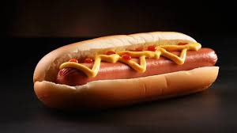

Hotdog

Ingredients
- 1 Hotdog bun
- 1 Beef frankfurter (sausage)
- 1 tablespoon Mustard or Ketchup
- 1 tablespoon Relish or chopped onions (optional)
Steps
- Boil, grill, or pan-fry the sausage for about 5 minutes until heated through.
- Lightly steam or toast the hotdog bun.
- Place the cooked sausage inside the bun.
- Add mustard, ketchup, and your favorite toppings on top.
- Serve immediately while hot.
Home